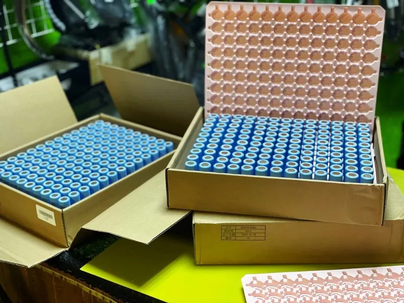
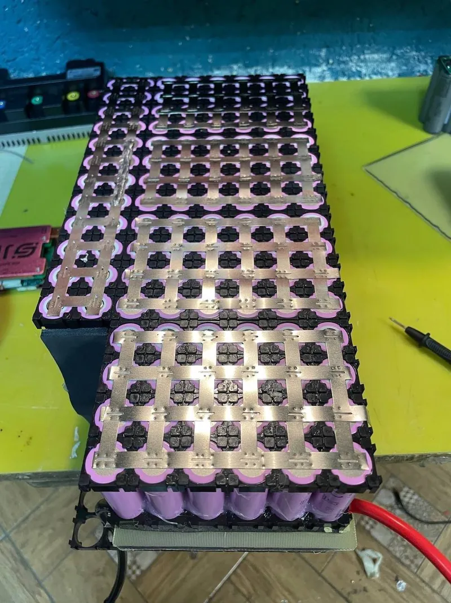
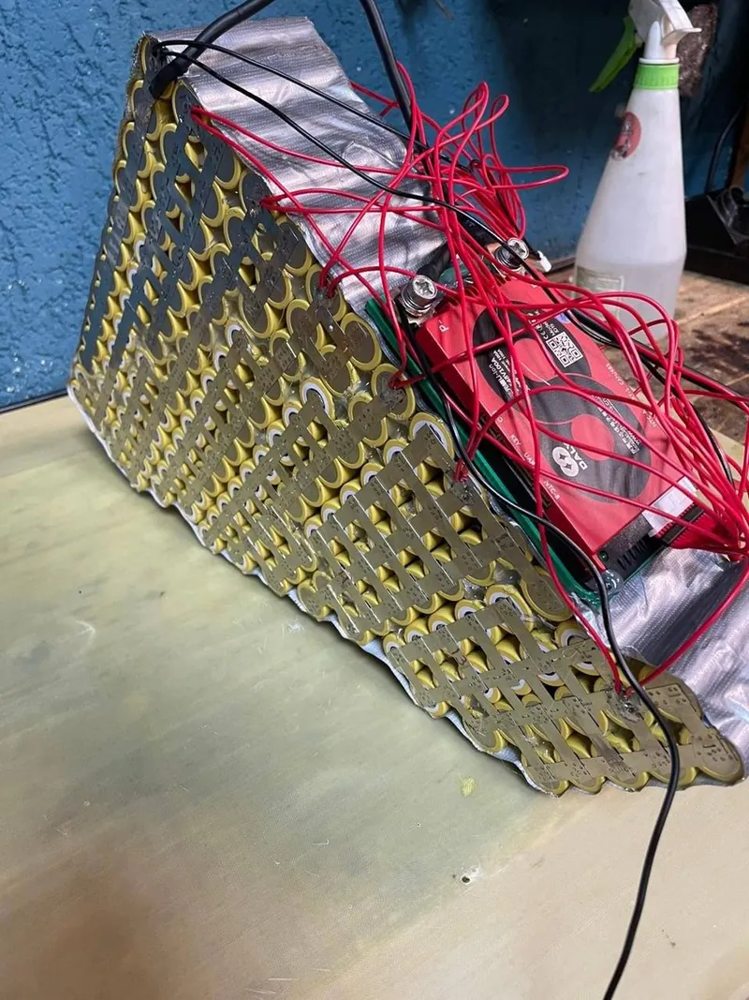
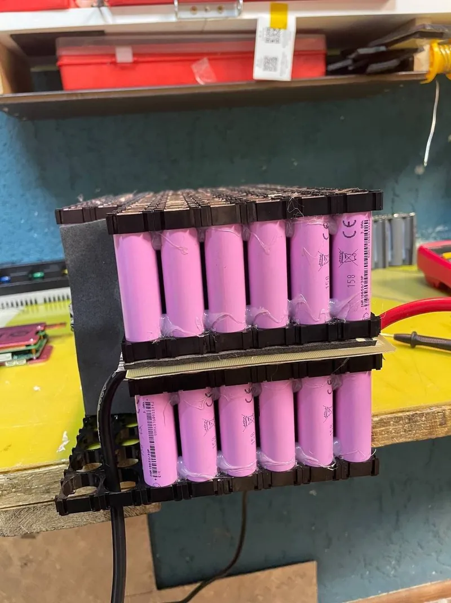
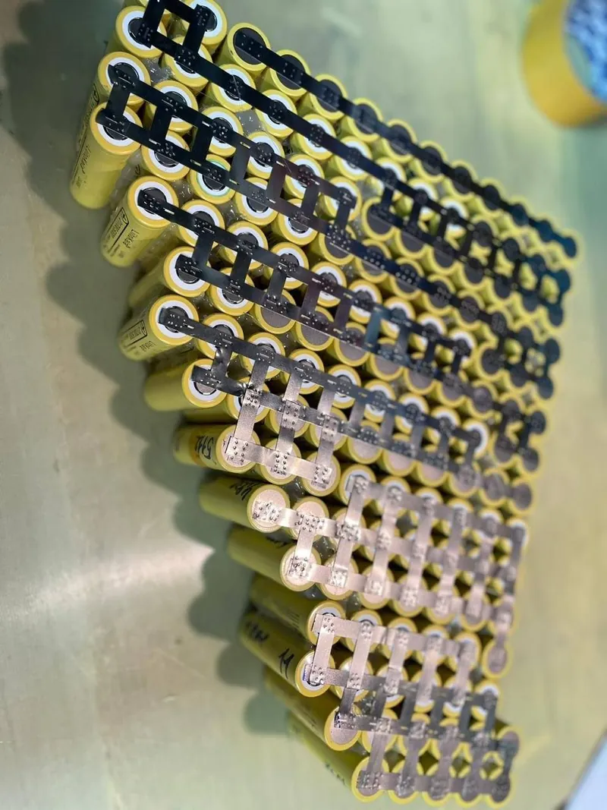
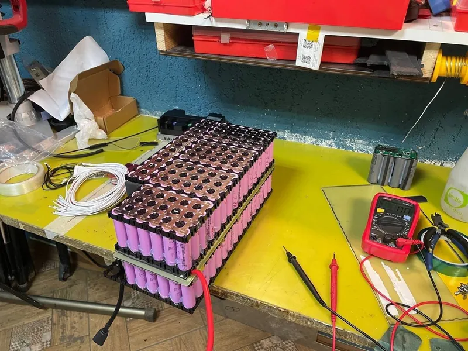
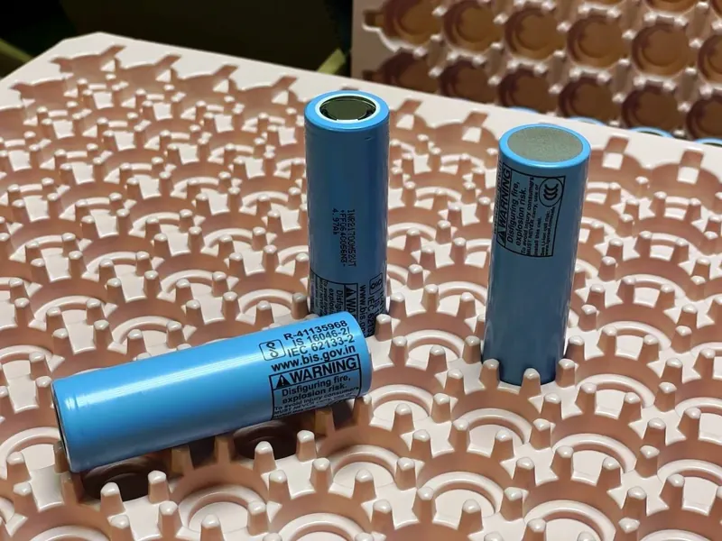
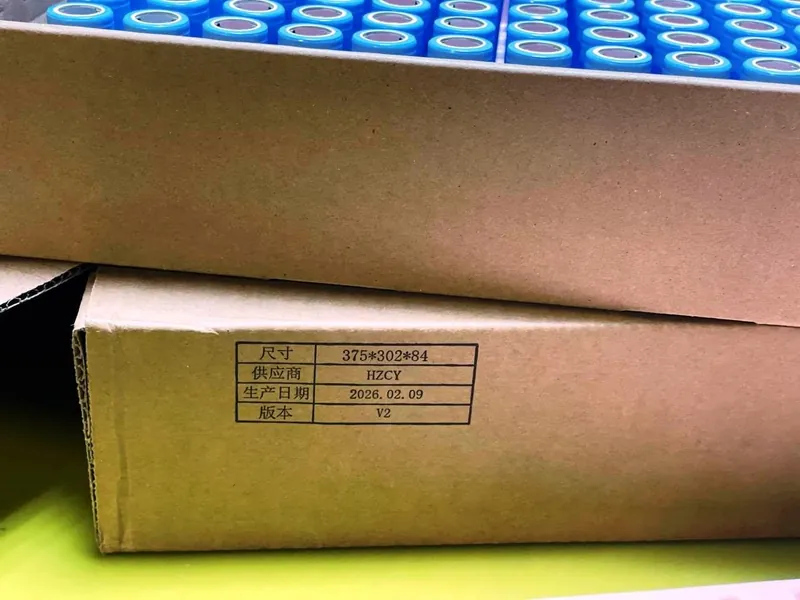

Сборка АКБ · Новосибирск
Сборка аккумуляторов на заказ
Индивидуальная сборка Li-ion АКБ под ваш велосипед, мото или самокат, ваши габариты и характеристики. Из наших или ваших элементов, на своём сварочном и тестовом оборудовании.
Новое направление
Как собираем
- ЗадачаТранспорт, напряжение, нужный запас хода и габариты места под батарею.
- КонфигурацияПодбираем ячейки, схему и BMS. Можно прикинуть в калькуляторе.
- СборкаКонтактная сварка, балансировка, проверка на стенде.
- ВыдачаОтдаём с замером ёмкости и рекомендациями по зарядке.
Из мастерской









Прайс на работы с АКБ
Предварительная цена определяется после диагностики и зависит от сложности работ.
Ремонт аккумуляторов
- Сборка аккумулятора под заказ (работа)
- от 10000 ₽
- Замер емкости акб (цена за 10АН)
- от 1000 ₽
- Замена штекера питания акб
- от 1000 ₽
- Балансировка акб
- от 1000 ₽
- Замена неисправной ячейки в секции акб
- от 2000 ₽
- Замена BMS платы
- от 2500 ₽
- Сварка аккумулятора (цена за один элемент)
- 100 ₽
Такой работы в прайсе нет. Позвоните мастеру, подскажем.
Вопросы о сборке
Сколько стоит собрать аккумулятор?
Работа по сборке от 10 000 ₽. Итоговая цена зависит от напряжения, ёмкости, ячеек и BMS: прикиньте конфигурацию в калькуляторе или позвоните мастеру.
Можно собрать из моих элементов?
Да, соберём из ваших или из наших. Ваши ячейки сначала проверим: ёмкость, внутреннее сопротивление, подбор в параллели.
Под какой транспорт собираете?
Электровелосипеды, электромото, самокаты, моноколёса и другие проекты. Подгоняем под габариты рамы или штатного корпуса.
Что с гарантией?
На сборку даём гарантию. Сроки и условия мастер скажет, когда согласуете конфигурацию.
Расскажите, что собираем
Новосибирск, Вокзальная магистраль, 3, цоколь, въезд со двора. Ежедневно с 11:00 до 20:00, кроме воскресенья.